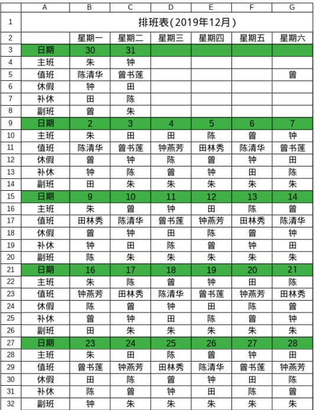
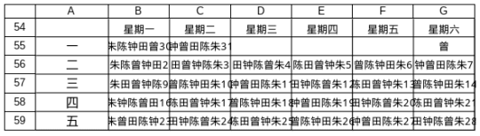

我真的很不喜欢无意义的简单重复，如果一件事情会重复，那么就应该考虑自动化的可能。这篇文章我要捣鼓的是考勤的问题。
考勤的流程是：月初排班——每日考勤登记——月末考勤统计。 我觉得这是一件很没有技术含量的事情，但是一旦出错，那绝对是严重影响生活质量的大事情。
我的设想是这样子的：
第一，既然有排班表，那么可以由排班表生成考勤登记表和考勤统计表；
第二，考勤登记表和考勤统计表完全可以整合成一个东西；
第三，可以根据考勤统计表自动对比考勤机数据（这一步不涉及我的工作，暂不表）。
第四，数据的共享及自动化将带来高效办公。
首先，要先编出排班表。因为上次研究的算法漫步——排班算法设计还没完成，我决定先使用办公表格实现我想要的东西，并且不使用宏编程而是单纯的公式，因为单位的电脑可能不支持宏。
先讲述下排班的思路设计：
主班排1人，值班排1人，休假排1人，补休排1人（昨日值班），其余人（若有）副班。因此，实际要编排的是主班、值班和休假的人员。
其他可以根据已有信息运算出来，比如：
补休的C7=B5,填充时注意首尾就可以了;
有点挑战的是副班的运算，我的思路将所有人定义成一个字符串，然后用SUBSTITUTE()公式将主班、值班、休假、补休替换成空字符，即可得到B8=
SUBSTITUTE(SUBSTITUTE(SUBSTITUTE(SUBSTITUTE($A$2,LEFT(B5,1),””),B4,””),B6,””),B7,””)。

然后，要根据排班表生成比较方便比对的信息串，我的思路是用, 连字符将主班、值班、休假、补休、副班、日期拼接成一个字符串。
之所以将日期置于结尾，是源于提取日期的方法及日期结构本身所限。目前我并不知道在办公表格中用公式直接提取字符串中的数字方法，所以我选择的是MID()截取的再用INT()转换的方式。而因为日期有可能是1位，也有可能是2位。为提取的普遍性，选择将日期置于末尾更为合理。如果是固定n个人参与排班的话，则MID()的起始位置n+1，截取的长度为2。
这些信息串最好按阵列放置，以便下一步引用，如图：

再者，信息的加工提取。先将信息阵列投射成信息串单列表，然后就可以做信息处理了：
日期C84=INT(MID(B84,6,2));
考勤状态的确定略显复杂，需要用到FIND()查找组合多重IF判断。思路是这样的：用FIND()得到信息串的索引，若为1则是主班标√，若为2则是值班标□，若为3则是休假标△，若为4则为补休标+，其他是副班标√。
D84=IF(FIND($D$83,B84,1)=1,”√”, IF(FIND($D$83,B84,1)=2,”□”, IF(FIND($D$83,B84,1)=3,”△”, IF(FIND($D$83,B84,1)=4,”+”,”√”))))
查找组合多重IF判断")
最后，将上步得到的信息按日期升序，转置变成横向，再适当编辑下，即可得到考勤记录表。


至此，由排班表生存考勤记录表的工作基本完成。之所以花时间去做出于两点原因：
其一是因为实现数据间的共享，可以省却很多不必要的工作。在有排班表的前提下，只要写个宏脚本，那么就可以自动生成一份考勤记录。每日只要在这份表上登记，月末自然就完成了统计。而有预排班做对照，考勤出现错误的情况能很好的比对出来。
其二是有过仅仅忘了打卡就白送一天的加班（没错双倍工资的那种）的经历，让我意识到，唯有用按部就班的程序方能对抗机械的制度及人。但仅仅确保考勤的正确是远远不够的，因为你无法确保和考勤机的数据是一致的，这才是最致命的。在尝试过让单位公开考勤机数据以便提前备注而未果之后，我能做到的确保自己无论如何不要忘记打卡，因此决定重启GTD体系，用日历和任务列表确保单位无法再因考勤问题扣我一分钱。是的，这个项目到这里并没有结束，下一步，我要做的是由排班表生成工作日历和任务列表。
2020-01-02 更新
虽然我知道这套方法还有待完善，但没想到当我一个月后再次使用时就出现了问题。这时，我去了乡下，剩下4个人参与排班，方案出现了bug。这时，我突然想起了当初学C语言时，老师说过“数据结构决定算法设计”，现在就到了印证的时候。
缺陷出现在信息串的编排上。原来的顺序“主班、值班、休假、补休、副班、日期”有一个前提就是主班、值班、休假、补休必须每天都有安排才行，而一旦出现不排休假或排多人休假的情形就会出现问题。
为了解决这个问题，必须引入哨兵或说定位符。如此的话，则需用CONCAT()代替, 进行信息拼接才能引入定位哨兵。然后用FIND()得到哨兵的位置，利用这个位置进行下一步的逻辑判断。
需要注意的是FIND(Find text, Text, Position)的函数构造，Position的意思查找的起始位置。为了不纠结Position，引入的哨兵最好不同，这样Position默认为1就好。
理论上，引入哨兵后，信息串的拼接顺序将变得不那么严格，但为了简化算法设计，顺序显然是优化项。
因为补休和值班的特殊性，将其放在开头固定其顺序是比较优化的做法。
至于日期就如之前说的因其位数不确定将其置于结尾才是正解。
主班和副班其实可以作整体行政班考虑，因其作息相同，考勤的标记也一致。
基于以上思路，信息串的拼接模式如下：
补休值班 - 休假 = 行政班～ 日期（引入了”-“, “=”, “~”3个哨兵）
1 | 在这个模式下，若info为信息串，则有： |
2 | 日期date = =INT(MID(info, FIND("~", info)+1, 2)) |
3 | 某人日程状态state = IF(FIND(somebody,info)=1,"+", IF(FIND(somebody,info)=2,"□", IF(FIND(somebody,info)<FIND("=", info),"△", "√"))) |
我也不知道这个方案是否就是通用的，至少目前来说，已经解决当下的问题。